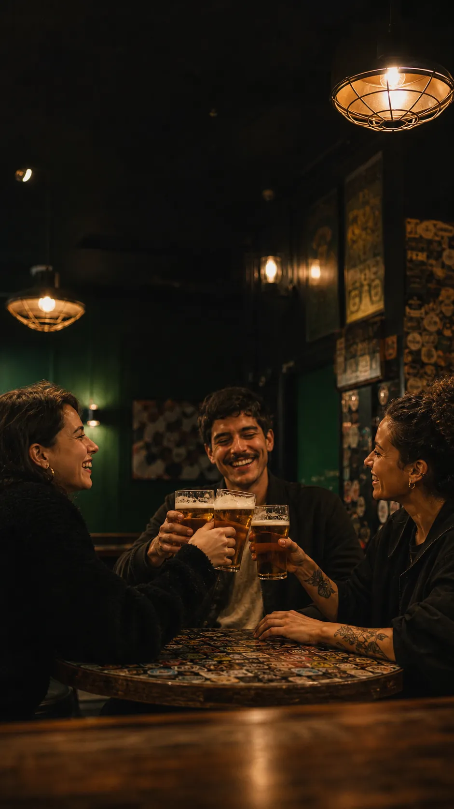
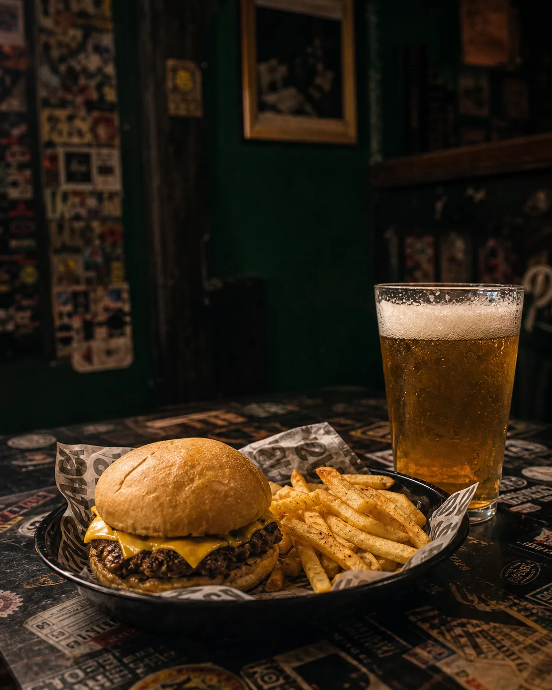

Quilmes · Buenos Aires · Beer bar
Nosotros
Un lugar real.
Una marca con futuro.
Pölcher es más que un bar. Beer bar, burgers y buena música, nacido en el barrio y hecho a pura cultura cervecera. Hoy es el punto de encuentro de amigos de Quilmes.
- Birra que nos representa
- Burger con actitud
- Barrio que nos identifica
- Buena selección de cervezas
- Real y sin pose
- Punto de encuentro

Preguntas frecuentes
Lo que todos
nos preguntan.
¿Algo que no está acá? Escribinos por Instagram y te contestamos.
Contacto
Ya sabés:
nos vemos en Pölcher.
Instagram
@polcher
Seguinos →
WhatsApp
Escribinos
Consultas y reservas →
Dónde estamos
Quilmes, Bs. As.
Mapa y dirección en Instagram